Ethan Fast, Elais Jackson, Abbie Jacobs, Eric Scott
Date: 21 June, 2009
We use an artificial neural network model to simulate joke propagation in a heterogeneous social network. Nodes 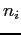 represent persons. Each node is assigned a "personality" value,
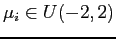, which is the mean of a Gaussian distribution, all of which have the same variance 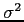. Jokes are represented by integers
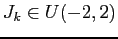. The probability that a person likes a joke 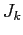 and tells it to his or her friends depends on where in the distribution
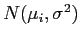 the joke falls. Specifically, we define
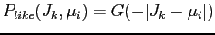, where
 is the cumulative distribution of
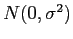, so that jokes falling closest to the mean of the distribution highest probability of being retold.
is the cumulative distribution of
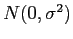, so that jokes falling closest to the mean of the distribution highest probability of being retold.
The network is initialized to be fully connected with random weights.1 Each node has an edge direct to itself, simulating memory. The random weights are initially adjusted depending on the similarity between the two nodes personalities, i.e.
| 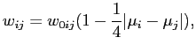 | (1) |
Instaces of the the jokes are randomly assigned as inputs to nodes ("told" to them) at time 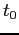, and the propogation loop begins. For each joke , every node has a probability 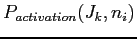 of sending an activation signal for , which depends on the incoming signals 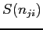 for that joke weighted by the probability 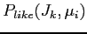 of liking the joke, divided by crowding effects for all jokes: taking inspiration from Malthusian population capacity, we model a limit to the number of jokes a person can remember and tell by dividing the probability by the total input signal of all jokes raised to an explonent 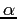. Note that we made a mistake in the equation by putting a normalizing factor in the denomonator (since 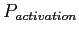 must be less than or equal to one) which actually cancels out the dependence on incoming signals for .
| 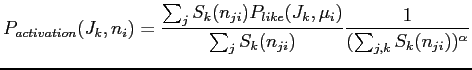 | (2) |
The second visualization is a bar graph of the cumulative number of jokes told:
This document was generated using the LaTeX2HTML translator Version 2002-2-1 (1.71)
Copyright © 1993, 1994, 1995, 1996,
Nikos Drakos,
Computer Based Learning Unit, University of Leeds.
Copyright © 1997, 1998, 1999,
Ross Moore,
Mathematics Department, Macquarie University, Sydney.
The command line arguments were:
latex2html hw.tex -split=0
The translation was initiated by Eric "SigmaX" Scott on 2010-06-24